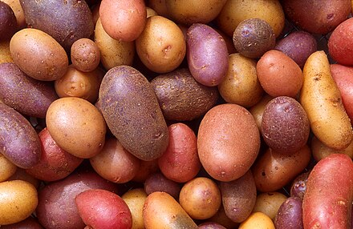
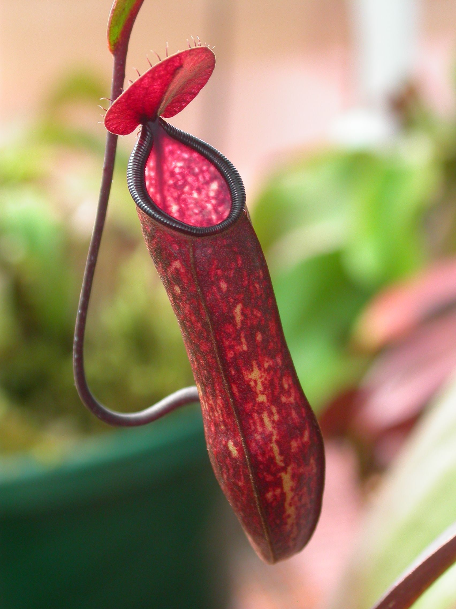

Atelier 02
Dans cette session de laboratoire, vous allez pratiquer les principes des interfaces et entraîner votre vigilance face au code non maintenable. Le code avec lequel travailler se trouve sur GitLab, vous n'avez besoin que du dossier "plants" et de son contenu.
Interfaces
Lors des cours et du laboratoire précédents, nous avons discuté de l'intérêt de coder contre des interfaces, plutôt que des classes. Dans ce premier bloc d'exercices, vous allez travailler avec une hiérarchie d'interfaces : Plantes et Plantes Carnivores. Vous allez donc travailler avec deux interfaces :
Plant, en tant qu'interface pour définir les fonctions classiques de toutes les plantes :- Photosynthèse ("consommation" de lumière)
- Boire ("consommation" d'eau)
CarnivorousPlant, en tant qu'interface pour ajouter des fonctions supplémentaires à certaines plantes :- Manger une mouche : Les plantes carnivores ne se contentent pas de faire la photosynthèse et de consommer de l'eau, elles attirent également des mouches délicieuses et digèrent leurs corps pour obtenir des nutriments supplémentaires.
Nous pouvons capturer avec précision cette hiérarchie de plantes avec deux interfaces :
Caption : deux rectangles représentation des interfaces (Plant, CarnivorousPlant), avec une relation "extends" entre eux.
Comment lire ce diagramme ?
Il y a deux interfaces : Plant et CarnivorousPlant. Les interfaces forment une hiérarchie, c'est-à-dire que les CarnivorousPlant héritent de tout le comportement des Plant
régulières. Les interfaces elles-mêmes ne fournissent aucune logique,
elles définissent seulement quelles fonctions les classes implémentantes
doivent fournir. Les hiérarchies d'interfaces sont additives, ce qui
signifie que toute classe concrète qui implémente uniquement Plant n'a besoin que des deux méthodes supérieures, mais toute classe qui implémente CarnivorousPlant nécessite que les trois méthodes soient implémentées.
Tâche 1, Pommes de terre
Votre première tâche est de télécharger et d'extraire le code fourni. Vous trouverez également une classe Main, avec l'implémentation par défaut suivante :
public static void main(String[] args) {
// Create a plant and a carnivorous plant instance.
Plant normalPlant = new Potato(); // TODO: create a new class "Potato" that is a plant, but not a carnivorousPlant.
// CarnivorousPlant carnivorousPlant = new PitcherPlant();
// Let both do some photosynthesis:
System.out.println("Doing photosynthesis:");
System.out.println(normalPlant.doPhotoSynthesis());
// System.out.println(carnivorousPlant.doPhotoSynthesis());
// Let both enjoy a sip of water
System.out.println("Serving water:");
System.out.println(normalPlant.drinkWater());
// ...
}
Le code fourni ne se compilera pas, car la méthode main utilise une nouvelle classe : Potato.

Légende des pommes de terre. Délicieuses, mais ce ne sont pas des plantes carnivores. Crédits de l'image : Wikipedia
À vous de jouer
- Écrivez une classe
Potatoquiimplémenteuniquement l'interfacePlantfournie. - Fournissez des implémentations pour les deux méthodes requises, mais ne modifiez pas les interfaces.
- Faites en sorte que
doPhotoSynthesis()retourne la chaîne :"Oh, sunbeams. I love warm sunbeams!" - Faites en sorte que
drinkWater()retourne la chaîne :"Slurp... aah!""
- Faites en sorte que
Compilez et exécutez votre code en utilisant uniquement les arguments de ligne de commande javac et java. Vérifiez que le code se compile correctement et imprime le texte suivant :
Tâche 2, Plantes Carnivores
Jusqu'à présent, vous avez seulement utilisé l'interface de niveau supérieur.
- Lors du dernier cours, nous avons brièvement vu le concept de plusieurs interfaces.
- Dans l'exemple ci-dessus,
CarnivorousPlantétend l'interfacePlantordinaire, ce qui fait que les classes implémentantCarnivorousPlantdoivent fournir des implémentations pour les deux interfaces combinées. - Un exemple est les plantes carnivores
- Les plantes carnivores, comme toutes les autres plantes, font de la
photosynthèse. Elles doivent fournir une implémentation pour
doPhotosynthesis(). - Les plantes carnivores, comme toutes les autres plantes, ont besoin d'eau. Elles doivent fournir une implémentation pour
drinkWater(). - Les plantes carnivores, contrairement aux autres plantes, attirent
et mangent des mouches. Elles doivent fournir une implémentation
supplémentaire pour
eatFly().
- Les plantes carnivores, comme toutes les autres plantes, font de la
photosynthèse. Elles doivent fournir une implémentation pour

Légende des plantes carnivores. Elles sentent délicieusement bon, si vous êtes une mouche. Crédits de l'image : Wikipedia
À vous de jouer
- Écrivez une nouvelle classe
PitcherPlant, qui implémente uniquement l'interfaceCarnivorousPlant. - Assurez-vous que la classe fournit toutes les méthodes requises.
- Faites en sorte que les méthodes de plante standard retournent des chaînes légèrement modifiées :
"Oh, sunbeams. I like sunbeams, but I like flies even more.""Slurp... good water, but could use some extra nutrients."
- Faites en sorte que la nouvelle méthode retourne une chaîne : "
Miam, une mouche !"
- Faites en sorte que les méthodes de plante standard retournent des chaînes légèrement modifiées :
- Décommentez les lignes désactivées dans la classe
Mainfournie, afin que la méthodemainressemble à ceci :
public static void main(String[] args) {
// Create a plant and a carnivorous plant instance.
Plant normalPlant = new Potato();
CarnivorousPlant carnivorousPlant = new PitcherPlant();
// Let both do some photosynthesis:
System.out.println("Doing photosynthesis:");
System.out.println(normalPlant.doPhotoSynthesis());
System.out.println(carnivorousPlant.doPhotoSynthesis());
// Let both enjoy a sip of water
System.out.println("Serving water:");
System.out.println(normalPlant.drinkWater());
System.out.println(carnivorousPlant.drinkWater());
// On top of that, let the carnivorous plant eat a fly
System.out.println("Feeding flies:");
System.out.println(carnivorousPlant.eatFly());
System.out.println(carnivorousPlant.eatFly());
Assurez-vous que le code se compile correctement et imprime le texte suivant :
Doing photosynthesis:
Oh, sunbeams. I love warm sunbeams!
Oh, sunbeams. I like sunbeams, but I like flies even more.
Serving water:
Slurp... aah!
Slurp... good water, but could use some extra nutrients.
Feeding flies:
Yummy, a fly!
Yummy, a fly!
Polymorphisme
Remarquez comment les sorties imprimées ont changé entre les pommes
de terre et les plantes carnivores, bien que nous ayons appelé les mêmes
méthodes : doPhotosynthesis() et drinkWater()
? Ce concept s'appelle le polymorphisme. Nous délégons un appel de
fonction à une classe, sans nous soucier de la manière dont elle est
implémentée. Différents objets implémentant la même interface peuvent
avoir des comportements différents, et nous les laissons gérer leur
réaction eux-mêmes. Ce concept est appelé Polymorphisme.
Utilisez le polymorphisme pour garder votre code propre
Le polymorphisme est un concept clé qui vous permet d'éliminer de
manière pratique le code trop compliqué, notamment les instructions if obsolètes.
Tâche 3, Mouches
Un exemple de code trop compliqué concerne nos plantes qui mangent des mouches. Considérez le changement suivant :
- Il y a une interface supplémentaire
FlygetName(): Stringretourne le nom de la classe implémentante.makeAnnoyingSound(): Stringretourne une représentation en chaîne du son produit par l'insecte en vol.
- Il y a deux classes implémentant
FlyFruitFly: Est petite, produit un son aigu ennuyeux.makeAnnoyingSound()retourne "Bziiiiiiiiiiiiiiiii".HoverFly: Est plus grande, produit des bourdonnements de son ennuyeux.makeAnnoyingSound()retourne "Bzuuuuuuuuuuuuu Bzz Bzz Bzuuuuuu".
Le diagramme ci-dessous illustre ces interfaces et classes supplémentaires :
De plus, considérez une interface CarnivorousPlant modifiée et une implémentation, de sorte que notre PitcherPlant fournisse une imitation réaliste de la capture de la mouche en vol et de la récolte de ses nutriments.
// Modified: now takes a Fly object as argument
@Override
public String eatFly(Fly fly) {
// Check which fly it is
if (fly.getName().equals("FruitFly")) {
return "Bziiiiiiiiiiiiiiiii... CHOMP!!!! That was delicious! Yummy! Thank you!";
} else {
return "Bzuuuuuuuuuuuuu Bzz Bzz Bzuuuuuu... CHOMP!!!! That was delicious! Yummy! Thank you!";
}
}
Nous pouvons maintenant nourrir des mouches à notre plante (dans Main) :
// Let the carnivorous plant eat two types of flies
Fly fly1 = new FruitFly();
Fly fly2 = new HoverFly();
System.out.println("Feeding flies:");
System.out.println(carnivorousPlant.eatFly(fly1));
System.out.println(carnivorousPlant.eatFly(fly2));
Ce qui nous donnera :
Feeding flies:
Bziiiiiiiiiiiiiiiii... CHOMP!!!! That was delicious! Yummy! Thank you!
Bzuuuuuuuuuuuuu Bzz Bzz Bzuuuuuu... CHOMP!!!! That was delicious! Yummy! Thank you!
À vous de jouer
Pourquoi le code, tel qu'il est actuellement implémenté dans PitcherPlant, est-il problématique ?
PitcherPlant contient une instruction if qui vérifie des implémentations spécifiques de Fly.
Chaque fois qu'une nouvelle classe de mouche est ajoutée, il faudrait
modifier le code. Nous pourrions facilement nous retrouver avec une
longue liste de vérifications if/else pour différents types de mouches.
- Modifiez le code fourni comme décrit ci-dessus.
- Ajoutez la nouvelle interface
Fly, ainsi que les deux classes qui l'implémentent. - Modifiez l'interface
CarnivorousPlantpour que la méthodeeatFly(Fly)accepte un objetFly. - Modifiez la classe
PitcherPlanten utilisant les instructionsif/elsefournies ci-dessus.
- Ajoutez la nouvelle interface
- Compilez et exécutez le code. Vérifiez que la sortie correcte est imprimée.
- Modifiez l'implémentation de la méthode
eatFly(Fly)dePitcherPlantafin qu'elle utilise le Polymorphisme. Il ne doit y avoir aucune instructionif/elseni appel àgetName().- Vérifiez que la même sortie est imprimée.
Solution
Solution accessible sur GitLab.
Here is the translation into Canadian French:
Ne consultez la solution qu'après avoir fait de votre mieux.
Bien qu'il soit naturel de jeter un coup d'œil à la solution pendant que vous résolvez, l'effet d'apprentissage en est considérablement réduit. Il est dans votre propre intérêt de tenter sérieusement de résoudre les exercices avant de consulter la solution. Si vous vous sentez bloqué, n'hésitez pas à demander de l'aide. Les assistants de laboratoire se feront un plaisir de vous donner quelques indices.